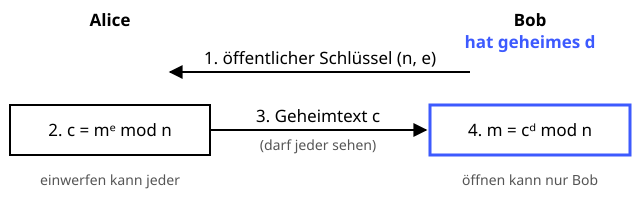

RSA-Verschlüsselung
Öffentlich verschließen, privat öffnen – wie ein Briefkasten.
Definition
RSA (Rivest, Shamir und Adleman, 1977) ist ein asymmetrisches Verfahren: Jeder Teilnehmer hat ein Schlüsselpaar aus einem öffentlichen Schlüssel zum Verschlüsseln und einem privaten Schlüssel zum Entschlüsseln. Die Sicherheit beruht darauf, dass es praktisch unmöglich ist, das Produkt zweier großer Primzahlen wieder in seine Faktoren zu zerlegen.
Zutaten
- Zwei große, geheime Primzahlen p und q
- Modul n = p · q (mindestens 2048 Bit)
- Öffentlicher Exponent e (meist 65537)
- Privater Exponent d
- Nachricht m als Zahl kleiner n
Zubereitung
- Zwei große Primzahlen p und q zufällig wählen.
- n = p · q und φ(n) = (p − 1)(q − 1) berechnen.
- Einen Exponenten e wählen, der mit φ(n) keinen gemeinsamen Teiler hat.
- d so berechnen, dass e · d mod φ(n) = 1 (erweiterter euklidischer Algorithmus).
- (n, e) veröffentlichen, d, p und q geheim halten.
- Verschlüsseln: c = me mod n.
- Entschlüsseln: m = cd mod n.
Skizze

Wie ein Briefkasten: Mit Bobs öffentlichem Schlüssel kann jeder verschlüsseln, entschlüsseln kann nur Bob mit seinem privaten Schlüssel d.
Skizze erstellt von Claude (KI)
Demo
Platzhalter für die Demo
Tipps
- „Lehrbuch-RSA“ wie in der Demo ist unsicher. In der Praxis wird die Nachricht vorher mit einem zufälligen Padding (OAEP) versehen.
- Schlüssellänge: mindestens 2048 Bit, besser 3072 Bit.
- RSA ist langsam. Man verschlüsselt damit nur einen zufälligen AES-Schlüssel (hybride Verschlüsselung), wie bei OpenPGP.
- „Rückwärts“ benutzt – mit dem privaten Schlüssel rechnen, mit dem öffentlichen prüfen – wird RSA zur digitalen Signatur.
- Ein ausreichend großer Quantencomputer könnte RSA mit dem Shor-Algorithmus brechen. Daran wird mit Post-Quanten-Verfahren gearbeitet.